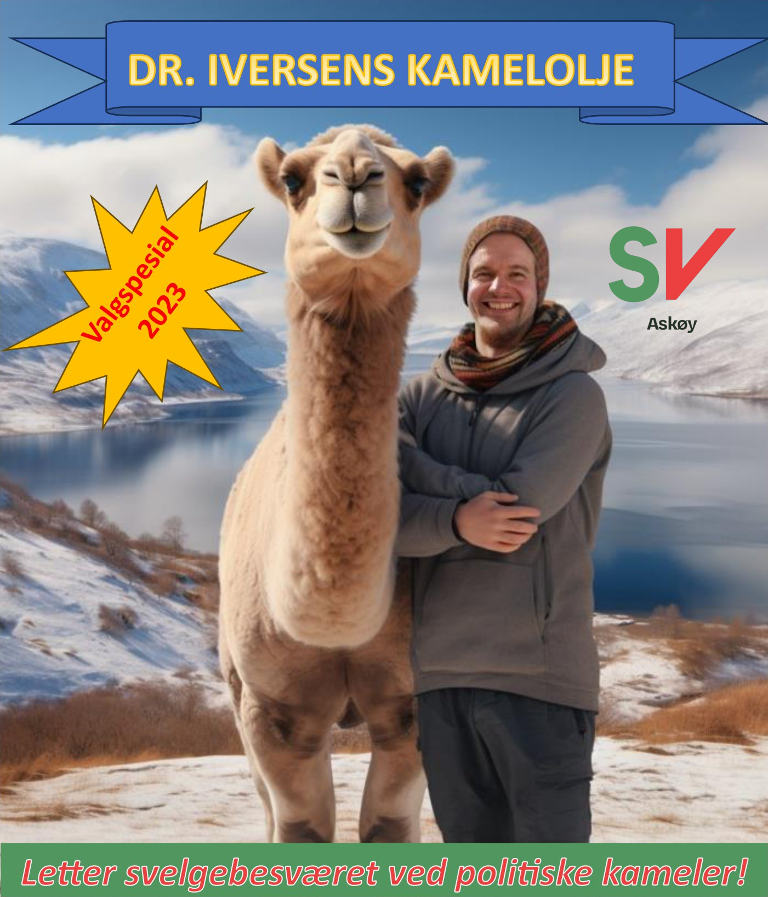

Appell på valgkampåningen, 14. august
SV ser også på valget som en mulighet. Vi øyner vi et håp om å skape et politisk fellesskap hvor vi kommer til enighet om de store og vanskelige valgene i Kleppestø, en mare som har ridd Askøy i uminnelige tider.
Til Ynge(H), Jannicke(AP), Bård(Askøylisten), Rosalind(Frp) og resten av flokken har jeg derfor en gave som kan brukes når valget er over, når posisjonene fordeles, når Kleppestøplanen skal behandles eller ellers når dere vil ha varig politisk enighet som står seg i generasjoner.
Dere får alle en flaske av Dr. Iversens kamelolje. Bruk den for å svelge politiske kameler, for med denne som hjelpemiddel kan avtalene stå seg over tid og skape ny og bærekraftig utvikling av Askøy. For alle våre politiske venner, konkurrenter og motstandere kan regne med et SV som er interessert i politiske samtaler om alt, så lenge det er vilje til å gi og ta.
Arild Iversen, Askøy SV